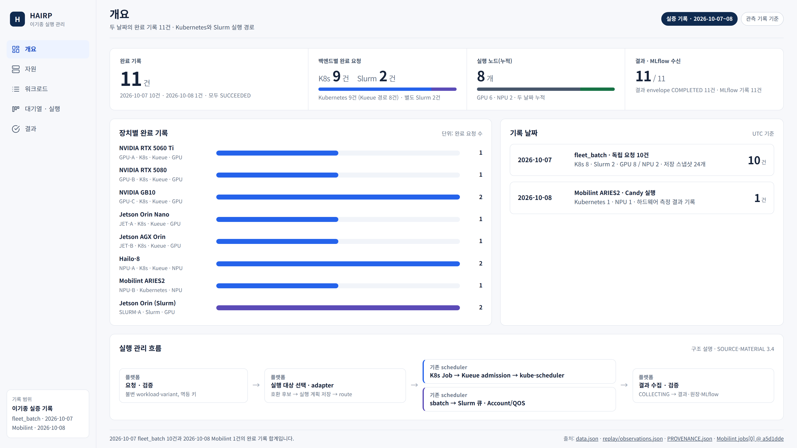
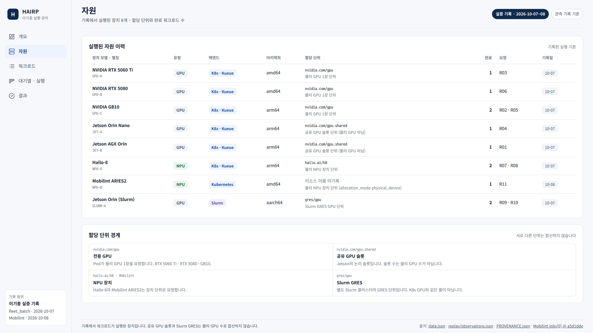
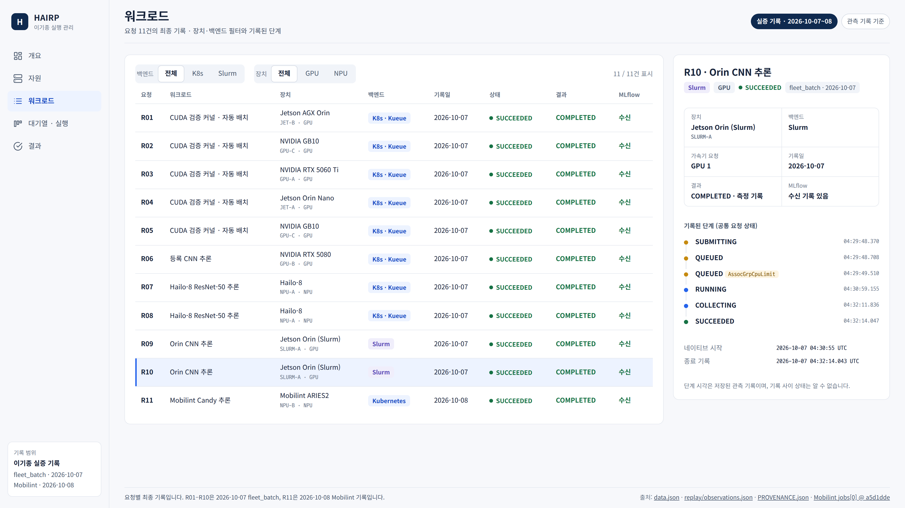
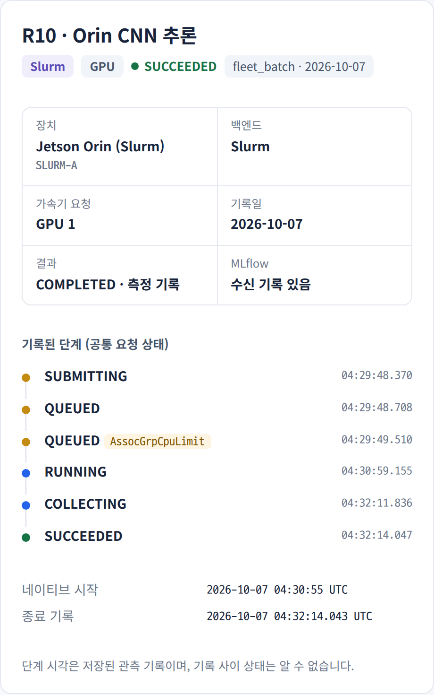
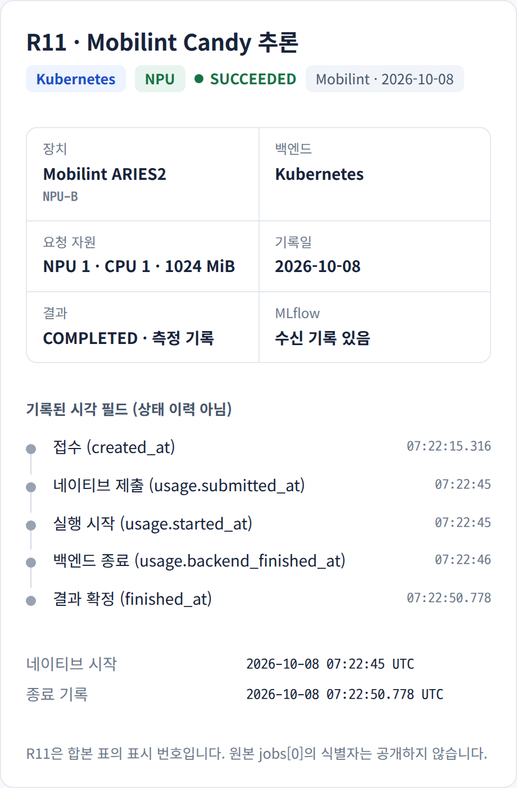
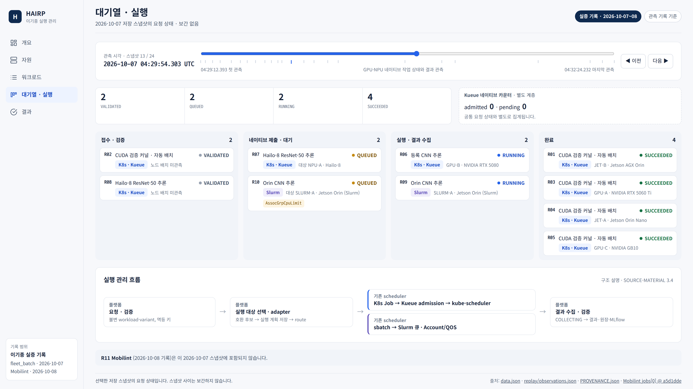
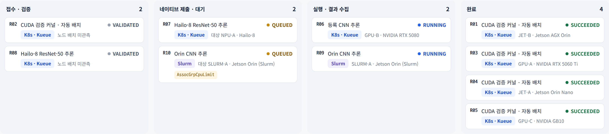
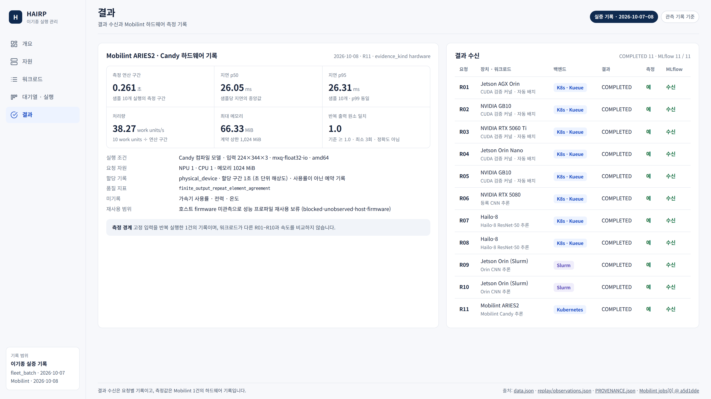

실증 기록 · 2026-10-07~08
실증 기록 관리 화면 캡처
저장된 실제 하드웨어 실행 기록을 2026-10-28에 새로 렌더링한 읽기 전용 화면입니다. 과거 운영 UI의 스크린샷이나 현재 live 상태가 아닙니다.

이기종 실행 완료 기록 개요완료 기록 11건 · 백엔드별 K8s 9건 / Slurm 2건 · 실행 노드(누적) 8 · 결과·MLflow 11/11
두 날짜 누적 · 동시 실행 아님

실행된 자원과 할당 단위 경계장치 8개의 모델·백엔드·할당 단위·완료 수
현재 inventory·용량·사용률 아님

요청 단위의 공통 작업 관리11건 · 백엔드/장치 필터 · 행 상세
R11은 2026-10-08 단독 기록

Slurm 대기 사유와 단계 기록R10 · AssocGrpCpuLimit 대기 → 실행 → 결과 수집 → 완료

Mobilint NPU 실행 기록Kubernetes · NPU 1 · CPU 1 · 1024 MiB 요청 · MLflow 수신
기록된 시각 필드이며 상태 이력 아님

한 시점의 대기·실행 상태2026-10-07 04:29:54.303 UTC · 완료 4 · 검증 2 · 실행 2 · 대기 2
Kueue admitted 0 · pending 0은 별도 계층 · 보간 없음

스냅샷 12 상태 보드같은 화면의 crop

결과 수신과 하드웨어 측정 경계Mobilint p50 26.05 ms · p95 26.31 ms · 38.27 work units/s
반복 출력 일치는 정확도 아님 · 장치 간 비교 아님